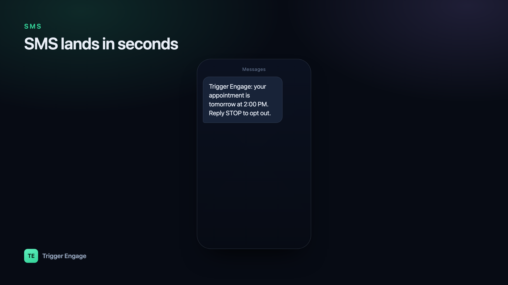

SMS cuts through in a way almost nothing else does — a text lands in seconds and gets opened around 98% of the time, far more reliably than email ever will. That is exactly why teams reach for it for one-time passcodes, urgent alerts, and appointment reminders. This guide shows you how to send SMS notifications in Laravel, starting with a five-minute driver setup and building up to event-driven, multi-channel messaging that scales.

When to use SMS (and when not to)
SMS is a premium channel. Every message costs money, lands in a deeply personal inbox, and is subject to strict consent rules. Use it where its speed and reach genuinely earn the intrusion:
- Two-factor authentication and OTPs — the message is only useful for a minute or two, so instant delivery matters.
- Delivery and appointment alerts — "your driver is 5 minutes away" or "your session starts in 30 minutes."
- Payment and account issues — a failed charge or a security event where you need the user to act now.
SMS is a poor fit for long-form content, rich formatting, or marketing blasts. There is no room to explain, no images, and a promotional text to someone who never asked for it is the fastest way to earn a spam complaint and lose your sender reputation. Keep SMS short, expected, and high-priority. For anything longer or less urgent, lean on event-based emails in Laravel or push notifications instead.
Option A: Laravel notifications with an SMS channel
Laravel's built-in Notification system is the cleanest starting point. A notification is a single class that can define multiple delivery channels, so the same "your appointment is confirmed" event can go out over mail, database, and SMS from one place. Community notification channels exist for all the major SMS providers, and each one gives you a driver you configure with credentials and a sender ID.
Generate a notification with php artisan make:notification AppointmentReminder, then declare SMS in its via() method and describe the message in a provider-specific method:
use Illuminate\Bus\Queueable;
use Illuminate\Contracts\Queue\ShouldQueue;
use Illuminate\Notifications\Notification;
class AppointmentReminder extends Notification implements ShouldQueue
{
use Queueable;
public function __construct(public string $startsAt) {}
// Which channels this notification goes out on
public function via($notifiable): array
{
return ['sms']; // the driver key registered by your channel package
}
// The SMS payload — keep it short and specific
public function toSms($notifiable)
{
return "Reminder: your session starts at {$this->startsAt}. Reply STOP to opt out.";
}
}Send it with $user->notify(new AppointmentReminder($startsAt)), and make sure your notifiable model exposes the phone number the driver expects (commonly a routeNotificationForSms() method). Because the class implements ShouldQueue, the actual API call to the provider happens on a queue worker rather than blocking the web request — which keeps your response times fast even when the provider is slow.
ShouldQueue and run at least one queue worker in production.Option B: call an SMS API directly
If you want full control — or your provider has no maintained notification channel — call the send endpoint yourself with Laravel's HTTP client. This is just a POST with your credentials, the destination number, a sender ID, and the message body:
use Illuminate\Support\Facades\Http;
public function sendSms(string $to, string $message): void
{
// Endpoint and payload shape depend on your provider's docs
$response = Http::asJson()->post('https://api.your-provider.com/v1/messages', [
'api_key' => config('services.sms.key'),
'to' => $to,
'from' => config('services.sms.sender'),
'sms' => $message,
]);
// You own error handling here — nothing retries for you
if ($response->failed()) {
report(new \RuntimeException('SMS send failed: ' . $response->body()));
}
}Keep your API key in config/services.php and the .env file, never hard-coded. The trade-off with the direct approach is that retries, timeouts, error logging, and delivery-status tracking are all now your responsibility. Wrap the call in a queued job so a failed send can retry with backoff rather than disappearing.
The limits of DIY for sequences
Both options above are perfect for firing a single, self-contained alert. They start to strain the moment you need a sequence. Consider a booking flow: confirm by SMS immediately, remind 24 hours before by email, nudge again by push an hour before, and stop everything the moment the user cancels. Hand-rolling that means juggling delayed jobs, tracking per-user state, deduplicating across channels, honoring opt-outs everywhere, and stitching together analytics. Each new step multiplies the branching logic, and it is easy to double-send or leak a message to someone who already unsubscribed.
Option C: event-driven SMS inside a journey
The scalable pattern is to stop deciding how to message from inside your application code and instead emit a single event describing what happened. A messaging engine then owns the decision of whether to send SMS, email, or push — and when. Your app fires one event; the journey does the rest.
This is where SMS pairs naturally with event-based email and push in a single flow, and where well-timed nudges help you reduce churn instead of adding noise. Trigger Engage is one open-source, MIT-licensed option built for exactly this — self-hostable or embeddable in a Laravel app via composer require trigger-engage/server, with a Laravel SDK that keeps the call site tiny:
use TriggerEngage\Facades\TriggerEngage;
// Attach known traits to the profile (idempotent, safe to repeat)
TriggerEngage::identify($user->id, [
'phone' => $user->phone,
'email' => $user->email,
]);
// Fire one event — the journey decides SMS vs email vs push, and timing
TriggerEngage::event($user->id, 'appointment.booked', [
'starts_at' => $appointment->starts_at,
]);The SDK is fail-open, queued, and idempotent, so a messaging outage never takes down your booking flow, and a retried event will not double-send. Channels cover email (SMTP, SES, Mailgun, Postmark), SMS through an SMS provider integration, and push via OneSignal — all keyed to the same profile, with no per-profile fee. Your application code stays focused on business logic while the sequence, timing, and channel selection live in one place.
Comparing the three approaches
| Approach | Best for | You manage |
|---|---|---|
| Notification + SMS channel | Single alerts, clean Laravel-native code | Driver config, phone routing |
| Direct API call | Full control, unusual providers | Retries, errors, delivery tracking |
| Event-driven journey | Multi-step, multi-channel sequences | One event call; engine owns the rest |
Compliance & deliverability
SMS is heavily regulated, and carriers police it aggressively. A few non-negotiables:
- Get explicit consent before you text anyone. Opt-in must be clear and recorded — an implied "they gave us their number" is not enough.
- Honor STOP and opt-out instantly. Include an opt-out instruction and suppress future sends to anyone who uses it.
- Use approved sender IDs registered with your provider and carriers, so your messages route correctly instead of being filtered.
- Respect DND routes and local do-not-disturb rules — some regions block promotional traffic to registered numbers entirely.
Almost all SMS you send this way is transactional rather than marketing — a direct response to something the user did. Keep it that way. And treat your SMS sender reputation with the same care that protects email deliverability: send expected, relevant messages to engaged recipients, and carriers will keep delivering them.
Testing
You never want a test suite firing real texts and burning credits. Point your SMS driver at a fake or log implementation in the testing environment so messages are written to the log (or captured in memory) instead of sent. With Laravel notifications you can go further and use Notification::fake(), then assert that the right notification was queued to the right user:
use Illuminate\Support\Facades\Notification;
Notification::fake();
// ...trigger the booking flow under test...
Notification::assertSentTo($user, AppointmentReminder::class);This verifies your logic without touching the provider at all, keeping tests fast, free, and deterministic.
Frequently asked questions
How do I send SMS in Laravel?
via() method, and configure a driver for your provider with an API key and sender ID. Call $user->notify(...) to send. For more control you can POST directly to your provider's send endpoint with the Http facade.